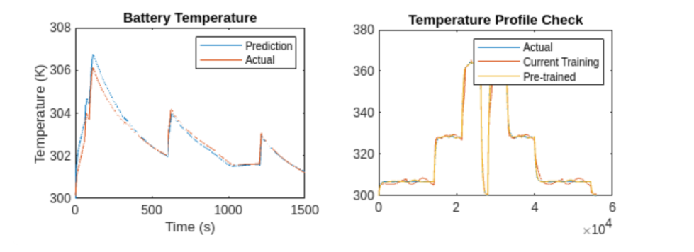

Build Virtual Sensor for Battery Management System
In a battery pack, voltage, current, and temperature sensors feed the battery management system (BMS). Physical temperature sensors are costly and hard to install throughout a large pack, so a numerical estimate of cell temperature can replace or back them up if one fails.
This workflow trains a NARX neural network on detailed Simscape battery data — using the product of instantaneous current and voltage as the load, plus a few initial temperature states — to predict the future temperature profile. It then verifies the network against a different current profile and can generate C code for on-board deployment.
Quick Setup
- Open the workflow Live ScriptOpen Live Script
Open
VirtualSensorNeuralNetModel.mlxto train a NARX network that predicts battery temperature from voltage and current. - Use the supplied drive profile and pretrained networkOpen battery test harness
Use
VirtualSensorNNDriveProfile01.matandVirtualSensorNNModelPreTrained.matto evaluate predictions without regenerating vehicle data. - Process the simulation resultsOpen result processing
Run
VirtualSensorNNSimResto convert logged voltage, current, and temperature into separate training and verification sequences. - Verify prediction against measurementOpen verification utility
Run
VirtualSensorNNVerifyand compare predicted and measured temperatures, including errors during rapid temperature changes.
Key Models and Components
| Model or component | Role | Reference |
|---|---|---|
| High-Voltage Battery | Provides the resolved cell temperature used as the training target. | View component |
| Battery test harness | Generates the voltage, current, and temperature training data. | View test harness |
Expected Results

The workflow produces these result types:
- Predicted versus actual temperature
- Current-training versus pretrained comparison
- Trained neural-network artifact and verification metrics
Supporting Files
| Purpose | Artifact | Action |
|---|---|---|
| Main workflow | VirtualSensorNeuralNetModel.mlx | Open Live Script |
| Result processing | VirtualSensorNNSimRes.m | Open file |
| Verification utility | VirtualSensorNNVerify.m | Open file |
Checks Before Using Results
- Keep training and verification profiles separate.
- Compare against the supplied pretrained result before changing the network.
- Inspect prediction error during rapid temperature transients.